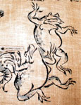
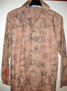
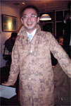
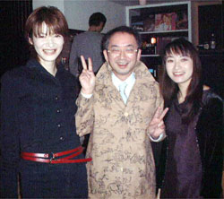
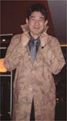
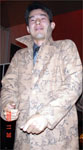
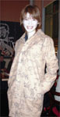

鳥獣戯画カエルコートで人生カエル！すてっぷ１つまんない日々にさよなら！ 【福岡発灰色人生をバラ色にカエル様】最近さー、景気わるいでしょ！仕事も思うようにいかないしさああ、家庭生活でも妻子に虐げられて、たばこも一日２本迄とか、超切り詰めた生活を強いられていたんだよね。ああーなんてつまんない毎日なんだろおおおって思っていたら、鳥獣戯画柄のコートが届きました。
 『鳥獣戯画』は日本最古の漫画なんですよ。「猪や、兎や猿などの干支入りしている一流動物を相手に、主役のカエルが大活躍」という素晴らしい作品を柄にしてプリントした生地でもってコートにしたものです。 福井県の方が、今年の『福岡かえる展４』に出展していたものを男性用に特注したものなんですよ。ある日、いつも着ている、くたびれた通勤コートの代わりに、この鳥獣戯画コートを着て会社に行くことにしました。思えばこの瞬間から人生変わったのかも！
すてっぷ２弱った心を強くカエル！ ぐわああああん。通勤バスの中でも目立ってる。最初はちょっと恥ずかしいんだけど。そんなん関係ないやんか。会社に行くと同僚が『ずいぶん変わったコートの柄ですなあああああああ』『わははは。なんすか？そのカエルぎっしり？』とか話し掛けるけど、みんな無視だぜ。そういえば、いつもは、しょぼくれて歩いていてんだけど、着た瞬間から、シークレットブーツはいたみたいに、自分がぐぐうううんとのびている。そんな気持ちになったなああああ。 これはこのコートの力では無いのか！そうみなぎる自信に任せて、さっそく取引先との商談会場の飲み屋に行くとおおおおおおおおおおおおおおおおおおっ！
すてっぷ３商談も成立だあああああっ！不景気で契約ものびずに、営業成績も最下位になっていたんですが、このコートの威力なのか、気迫に押されたのか、名刺交換もスムーズに。商談もまとまり、気分は最高っすううううう。酒もすすむぜ！
すてっぷ４美女にもモテモテだあああああっ！  しかも、コートのおかげで『素敵なコートですねえええええええええええ』『ぜひ彼氏になってください』って、申し込みがその場で殺到。取りあえず。身体はひとつしかないし体力もないので、好みのタイプを選抜して、その日は、一般キャンセル待ち整理券１６枚を発行して、今はそのうちの一人と交際しています。
モテモテやんかああ。『あたしの順番はいつくるのおおおおおおお』って、みんなうるさいんで、今度から３日交代で全員と交際することにしています。モテるってこんなに大変なことだったのかああああ。今まで知らなかったぞおおおおおお。
  すてっぷ５襟たてて着るとおっしゃれええええええ！それを見ていた、取引先の会社員も、『私も着てみたい！』と、試着すると、『あたしもよおおおおおっ』『おれもだああああああああ』って、鳥獣戯画コートは大もて状態でしたああああああ。なんでも、コートの襟を立ててきるととってもおしゃれで、飲食店にたまたまきていた、ショップの店長さんが、『うちでも仕入れたいけど、どこから買ったんですか』と、質問されたのには、びっくりしましたあああああ。 すてっぷ６サンジューさんも絶賛！ なで肩でやせている男性とかがあああ。半袖Ｕ首のＴシャツに鳥柄のネクタイ締めて、上にこのコート着てたりしたら、はっきりいってあたし的には、かなりいいかも。凶気の桜のクボヅカくんとかー、特攻服でなくて、この鳥獣戯画コート着てたら、あの映画もっと大ヒットしてたよねーっ。 ネクタイとかあったら、もっといいなー。それにしても市販してないのが残念。鳥獣戯画コートだれか探して買ってくれないかなー。もー、どんなクリスマスプレゼントよりもうれしいよねーっ！！光り物とか、イタめしとかいらないっちゅーの（談）
◆カエルグッズ ◆カエルリンク ◆カエル・コスプレ ◆カエルな表紙 ◆カエル掲示板 ◆けろテン市場 ◆かえる俳句を詠む 投稿採用者に武功カエル徽章を授与！ |

|
私も入っています。。全国かえる奉賛会
大王様に会うには、このバナーをクリック。ずっと奥に写真館があるぞ。全国かえる奉賛会に入会するには、自分のホームページのどこかに、下の部分を追加するとバナーがリンク付きで表示されるぞ。どんどん入会しましょー |


|